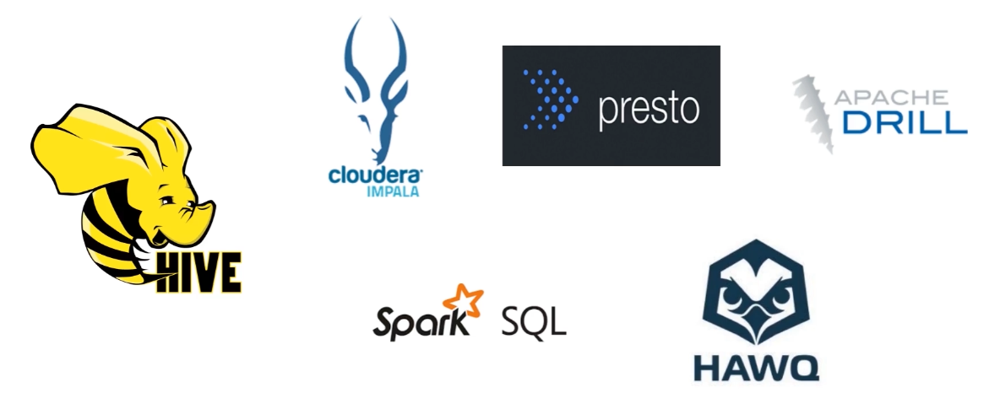
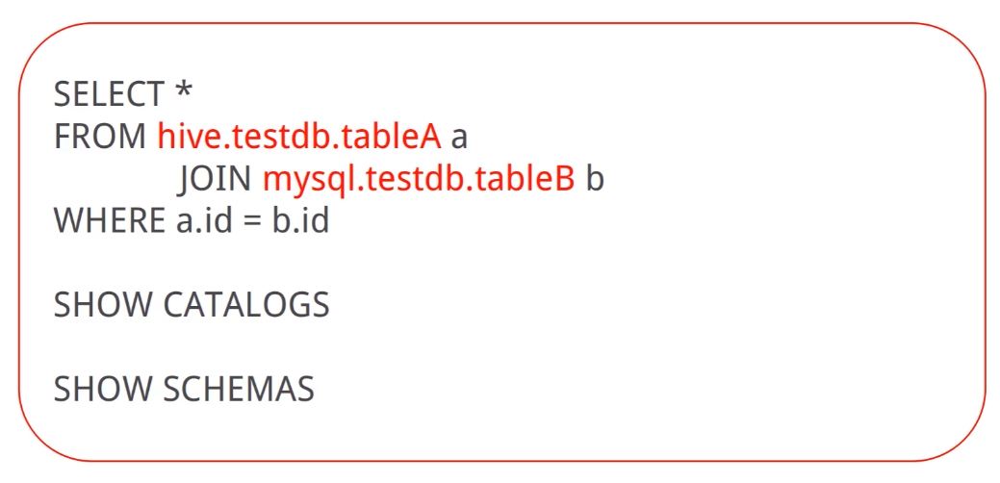
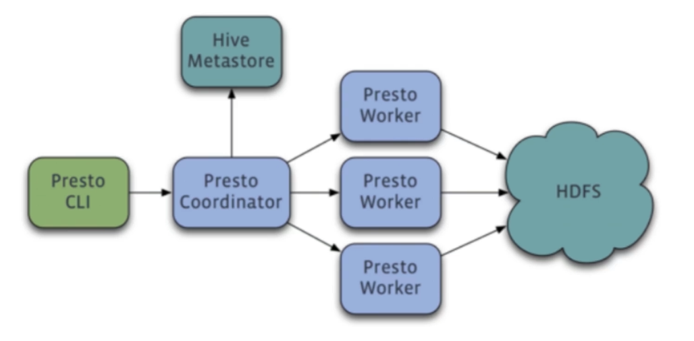
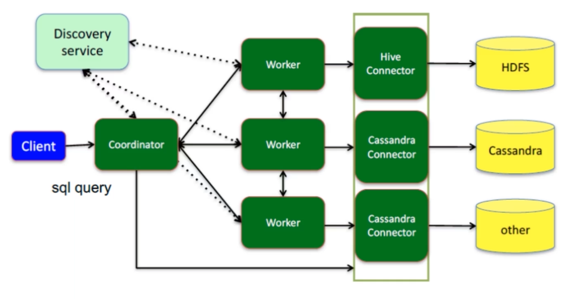
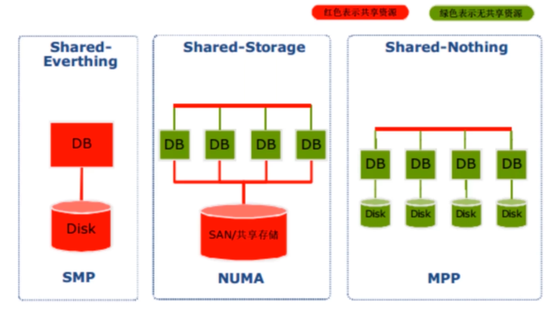

Presto简介
SQL on Hadoop

Hive的出现让技术人员可以通过类SQL的方式对批量数据进行查询,而不用开发MapReduce程序
MapReduce计算过程中大量的中间结果磁盘落地使运行效率较低
为了提高SQL on Hadoop的效率,各大工具应运而生,比如Shark, Impala等
Presto是什么
Presto是由Facebook开发的分布式SQL查询引擎,用来进行高速实时的数据分析
Presto的产生是为了解决Hive的MapReduce模型太慢且不能通过BI等工具展现HDFS数据的问题
Presto是一个计算引擎,它不存储数据,通过丰富的Connector获取第三方服务的数据,并支持扩展
Presto显而易见的优点
Presto支持标准的SQL,降低了分析人员和开发人员的使用门槛
Presto支持可插拔的Connector,可以连接多种数据源。包括Hive、RDBMS、Kafka、MongoDB等等
Presto是一个低延时、高并发的内存计算引擎,比Hive执行效率高的多
查询示例

Presto数据模型
Catalog:即数据源。Hive、Mysq都是数据源。Presto可以连接多个Hive和多个Mysql
Schema:类比于DataBase,一个Catalog下有多个Schema
Table:数据表,与我们常用的数据库表意义相同,一个Schema下有多个数据表
Presto架构与执行流程
Presto架构

Presto为Master-Slave架构,由三部分组成:
- 一个Coordinator节点
- 一个Discovery Server节点
- 多个Worker节点
Presto组件
Coordinator负责解析SQL语句,生成查询计划,分发执行任务
Discovery Server负责维护Coordinator和Worker的关系,通常内嵌于Coordinator节点
Worker节点负责执行查询任务以及与HDFS进行交互读取数据
Presto查询流程

Presto名词
- Plan: Presto将需要执行的SQL进行解析,生成执行计划
- Stage: Presto执行计划分为多个Stage,比如读取数据、聚合数据等
- Task: Stage由多个Task组成,每个Task分配到一个Worker执行
- Split:一个分片表示大的数据集合中的一个小子集,与MapReduce类似
- Page: Presto中处理的最小数据单元
数据库架构设计

- Shared Everthting:完全透明共享CPU/MEMORY/IO,并行处理能力是最差的 代表是SQL server
- Shared Storage:各个处理单元使用自己的私有CPU和Memory,共享磁盘系统 代表是Oracle
- Shared Nothing:各个处理单元都有自己私有的CPU/内存/硬盘等 mmp模式，大规模处理模式 代表是hadoop
presto是mpp模式，本身不存储数据，但是数据在各个分开数据源中。
MPP架构的优缺点
- 易扩容:可轻松通过扩展机器节点(处理单元)扩展整个系统的分布式存储和计算能力
- 效率高:任务并行执行能力强,充分发挥本地计算的能力,数据无共享、无1/0冲突,无锁资源竞争,计算速度快
- 短板效应:单个节点查询效率慢会影响整个查询
presto安装部署
- 解压后进入presto
1
2
3
4
5
6
7
8[bigdate@hadoop app]$ cd presto
[bigdate@hadoop presto]$ ll
总用量 208
drwxr-xr-x. 3 bigdate bigdate 84 1月 12 22:58 bin
drwxr-xr-x. 2 bigdate bigdate 8192 1月 12 22:58 lib
-rw-rw-r--. 1 bigdate bigdate 191539 1月 12 22:58 NOTICE
drwxr-xr-x. 29 bigdate bigdate 4096 1月 12 22:58 plugin
-rw-rw-r--. 1 bigdate bigdate 119 1月 12 22:58 README.txt - 编辑配置文件
1
2
3
4
5
6
7
8
9
10
11
12
13
14
15
16
17
18
19
20
21
22
23
24
25
26
27
28
29
30
31
32
33
34
35
36
37
38
39
40
41
42
43
44
45
46
47
48
49
50
51
52
53
54
55
56
57[bigdate@hadoop presto]$ mkdir etc
[bigdate@hadoop presto]$ ll
总用量 208
drwxr-xr-x. 3 bigdate bigdate 84 1月 12 22:58 bin
drwxrwxr-x. 2 bigdate bigdate 6 7月 6 22:03 etc
drwxr-xr-x. 2 bigdate bigdate 8192 1月 12 22:58 lib
-rw-rw-r--. 1 bigdate bigdate 191539 1月 12 22:58 NOTICE
drwxr-xr-x. 29 bigdate bigdate 4096 1月 12 22:58 plugin
-rw-rw-r--. 1 bigdate bigdate 119 1月 12 22:58 README.txt
[bigdate@hadoop presto]$ cd etc
[bigdate@hadoop etc]$ vim config.properties
coordinator=true
node-scheduler.include-coordinator=true
discovery-server.enabled=true
http-server.http.port=9999
discovery.uri=http://hadoop:9999
query.max-memory=2GB
query.max-memory-per-node=1GB
query.max-total-memory-per-node=2GB
query.initial-hash-partitions=100
query.max-run-time=600s
query.max-execution-time=600s
[bigdate@hadoop etc]$ vim node.properties
node.environment=my_presto
node.id=node01
node.data-dir=/home/bigdate/date/presto/date
[bigdate@hadoop etc]$ vim jvm.config
-server
-Xmx4G
-XX:+UseConcMarkSweepGC
-XX:+ExplicitGCInvokesConcurrent
-XX:+CMSClassUnloadingEnabled
-XX:+AggressiveOpts
-XX:+HeapDumpOnOutOfMemoryError
-XX:OnOutOfMemoryError=kill -9 %p
-XX:ReservedCodeCacheSize=150M
[bigdate@hadoop etc]$ vim log.properties
com.facebook.presto=INFO
[bigdate@hadoop etc]$ mkdir catalog
[bigdate@hadoop etc]$ cd catalog
[bigdate@hadoop catalog]$ vim jmx.properties
connector.name=jmx
[bigdate@hadoop catalog]$ vim hive.properties
connector.name=hive-hadoop2
hive.metastore.uri=thrift://localhost:9083
hive.config.resources=/usr/local/hadoop/etc/hadoop/hdfs-s ite.xml, /usr/local/hadoop/etc/hadoop/hdfs-core.xml
hive.allow-drop-table=false - 启动验证连接
1
2
3
4
5
6
7
8
9
10
11
12
13
14
15
16
17
18
19
20
21
22
23
24
25
26
27
28
29
30
31
32
33[bigdate@hadoop bin]$ ./launcher run
......
2020-07-07T21:07:09.421+0800 INFO main com.facebook.presto.server.PrestoServer ======== SERVER STARTED ========
[bigdate@hadoop bin]$ ./launcher start 后台启动
Started as 11353
[bigdate@hadoop bin]$ ./presto-cli.jar --server hadoop:9999 --catalog hive --user bigdate
presto> show catalogs
-> ;
Catalog
---------
hive
jmx
system
(3 rows)
Query 20200707_131618_00000_8ayhz, FINISHED, 1 node
Splits: 19 total, 19 done (100.00%)
0:02 [0 rows, 0B] [0 rows/s, 0B/s]
presto> show schemas;
Query 20200707_131633_00002_8ayhz failed: Failed connecting to Hive metastore: [localhost:9083]
//以上错误是因为hive metastore 以及 hiveserver2 没启动
presto> show schemas;
Schema
--------------------
default
information_schema
(2 rows)
Query 20200707_131830_00004_8ayhz, FINISHED, 1 node
Splits: 19 total, 19 done (100.00%)
0:02 [2 rows, 35B] [0 rows/s, 17B/s]